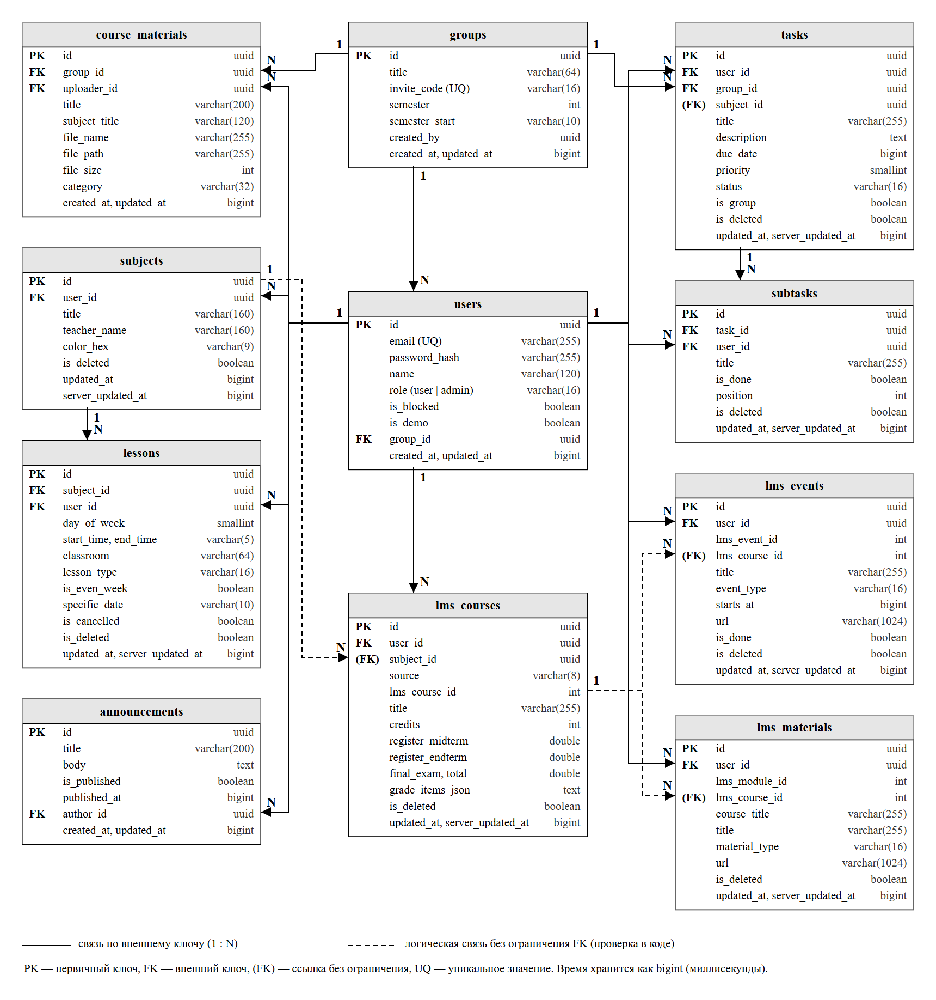
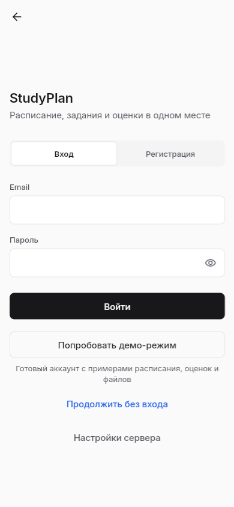
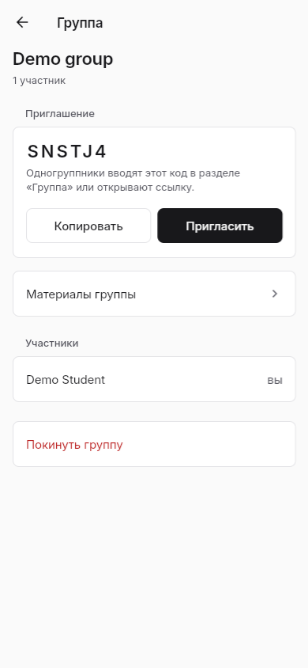
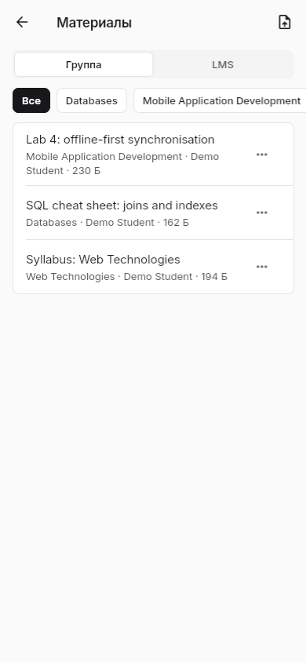
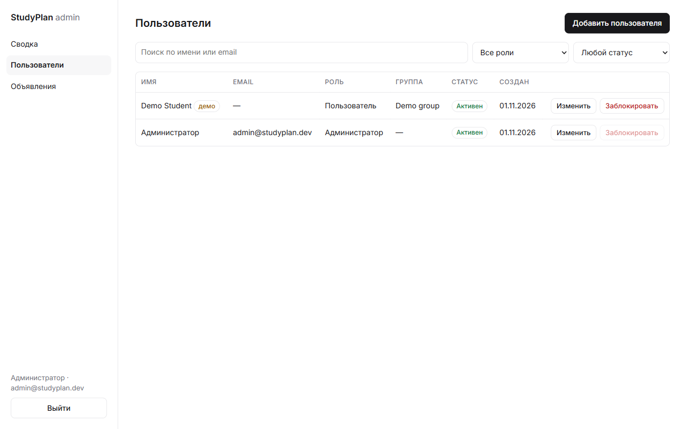

Выбрана клиент-серверная архитектура с offline-first клиентом: у приложения своя база на устройстве, а сервер только принимает и раздаёт изменения. Альтернатива — обычный «тонкий» клиент, который каждый раз берёт данные с сервера.
Критерий
Offline-first клиент + сервер (выбрано)
Тонкий клиент + сервер
Работа без сети (П1, FR-15)
Полная
Нет — пустой экран
Скорость открытия экрана
Мгновенно, из локальной базы
Зависит от сети
Сложность разработки
Выше: нужна синхронизация и разрешение конфликтов
Ниже
Нагрузка на сервер и трафик
Меньше: передаются только изменения пачкой
Больше: каждый экран — запрос
Почему так: главная потребность из исследования — работа в цоколе без связи. Тонкий клиент её не решает, поэтому усложнение ради синхронизации оправдано. Микросервисы не нужны: нагрузка небольшая, один сервер справится.
2. Схема архитектуры
Рис. 1. Архитектура StudyPlan: 13 логических компонентов и потоки данных
Пароли от LMS через наш сервер не идут: студент входит в LMS прямо во встроенном браузере, приложение только читает уже открытую страницу.
3. Карточки компонентов
Название
К3. Локальная база (Drift / SQLite)
Назначение
Хранит все данные пользователя на устройстве: предметы, пары, задачи, подзадачи, курсы LMS
Вход / выход
Вход: записи от интерфейса и от синхронизации. Выход: потоки данных для экранов, список несинхронизированных записей
Зависимости
Нет внешних, работает без сети
Ошибки
Ошибка записи — показать сообщение, данные не теряются; изменение схемы — миграция версии базы
Требования
FR-10, FR-15, NFR-06, NFR-07
Название
К4. Модуль синхронизации
Назначение
Отправляет изменённые записи на сервер и забирает новые, показывает статус
Вход / выход
Вход: записи со статусом «pending», время последней синхронизации. Выход: обновлённая локальная база, статус (ок / нет сети / ошибка)
Зависимости
К3, К5, сервер POST /api/sync
Ошибки
Нет сети — ждать и повторить позже, записи остаются «pending»; 401 — выход из аккаунта
Требования
FR-12, FR-16, FR-17, NFR-04, NFR-10
Название
К5. API-клиент
Назначение
Все HTTP-запросы к серверу, подставляет токен
Вход / выход
Вход: запрос от модулей. Выход: JSON-ответ или ошибка
Зависимости
Dio, адрес сервера из настроек
Ошибки
Таймаут — ошибка «нет сети»; 401 и 403 USER_BLOCKED — сигнал выйти в гостевой режим
Требования
FR-02, NFR-02
Название
К6. Импорт из LMS
Назначение
Загружает курсы, сроки сдачи и оценки из Moodle вуза
Вход / выход
Вход: открытая страница LMS после входа студента. Выход: курсы и события в локальной базе
Зависимости
WebView (нет в веб-версии), разборщик ответов Moodle, К3
Ошибки
LMS недоступна или изменился формат — импорт прерывается, старые данные остаются, ручные курсы не трогаются
Требования
FR-10, FR-15
Название
К8. Сервис авторизации
Назначение
Регистрация, вход, профиль, группы и коды приглашения
Вход / выход
Вход: почта, пароль, имя, код группы. Выход: JWT-токен, профиль, данные группы
Зависимости
bcrypt, jsonwebtoken, К13
Ошибки
Неверный пароль — 401 (без уточнения, что именно неверно); занятая почта — 409; заблокирован — 403
Требования
FR-01, FR-02, FR-04, NFR-01
Название
К9. Сервис синхронизации (сервер)
Назначение
Принимает пачку изменений, решает конфликты, отдаёт новое
Вход / выход
Вход: изменения по таблицам + last_synced_at. Выход: записи, изменённые с этого времени (свои и группы), новое время
Зависимости
К7, К13, список разрешённых полей (schema.js)
Ошибки
Чужая запись или чужая группа — отклонить; любая ошибка — откат всей транзакции, клиент повторит
Требования
FR-12, FR-16, NFR-03, NFR-05, NFR-10
Название
К10. Материалы группы
Назначение
Загрузка, список и скачивание файлов группы
Вход / выход
Вход: файл, название, предмет. Выход: запись о материале, файл по ссылке
Зависимости
multer, файловое хранилище, К13
Ошибки
Файл больше 10 МБ — 400 UPLOAD_ERROR; нет группы — 400; чужой материал или нет файла — 404; удаление чужого — 403
Требования
FR-14
Кратко об остальных: К1 — экраны, только показывают данные и передают действия; К2 — чистые функции (неделя, статус пары, расчёт оценки), покрыты тестами; К7 — проверка каждого запроса до сервисов; К11/К12 — управление пользователями и объявлениями; К13 — серверная база.
К1 → К3 (pending). К4 видит, что сети нет, статус «нет сети». При появлении сети К4 отправляет отметку, статус «синхронизировано».
3
Конфликт правок
Альтернативный
Два устройства изменили одну задачу офлайн. К9 сравнивает updated_at, оставляет более позднюю правку, второе устройство получает её при следующей синхронизации.
4
Истёк токен / пользователь заблокирован
Ошибочный
К5 получает 401 или 403 → приложение выходит в гостевой режим, локальные данные остаются на устройстве.
5
Попытка записать задачу в чужую группу
Ошибочный
К9 видит, что group_id не совпадает с группой пользователя → запись отклонена, остальные данные не сохраняются (откат транзакции).
6
Импорт из LMS
Основной
Студент входит в LMS в К6 → скрипт читает курсы и сроки → К3 → К4 отправляет на сервер.
5. Концептуальная модель данных
Сущность
Ключевые атрибуты
Связи
Пользователь
id, email, имя, хеш пароля, роль (user/admin), заблокирован
входит в 0..1 группу
Группа
id, название, код приглашения, начало семестра
1 группа — много пользователей
Предмет
id, название, преподаватель, цвет
принадлежит пользователю
Пара
id, день недели, время, кабинет, тип, чётная неделя, отменена
пользователя; может быть связана с предметом и группой
Подзадача
id, название, выполнена, порядок
много подзадач у задачи
Материал
id, название, файл, размер, категория
группы; загрузил пользователь
Курс LMS
id, название, кредиты, оценки
пользователя; может быть связан с предметом
Событие LMS
id, название, срок, тип
относится к курсу
Объявление
id, заголовок, текст, опубликовано
автор — администратор
У всех синхронизируемых сущностей есть updated_at (для LWW) и is_deleted (мягкое удаление). id создаёт само устройство (UUID), поэтому записи можно создавать без сети.

Рис. 2. ER-диаграмма серверной базы
6. Матрица прав доступа

Вход / гостевой режим

Группа: участники, код

Материалы группы

Админ-панель: пользователи, блокировка
Рис. 3. Экраны для трёх ролей: гость, пользователь, администратор
Действие
Гость
Пользователь
Администратор
Свои пары и задачи на устройстве
Да
Да
Да
Синхронизация с сервером
Нет
Да (только свои данные)
Да (только свои данные)
Вступить в группу, видеть участников
Нет
Да
Да
Опубликовать задачу для группы
Нет
Только в своей группе
Только в своей группе
Загрузить / скачать материалы
Нет
Только своей группы
Только своей группы
Удалить материал
Нет
Только свой
Только свой
Читать объявления
Да
Да
Да
Создавать и публиковать объявления
Нет
Нет
Да
Список пользователей, блокировка
Нет
Нет
Да
7. Угрозы и меры защиты
№
Угроза
Мера
1
Утечка паролей из базы
Хеш bcrypt, открытые пароли не хранятся
2
Подбор пароля
Одинаковый ответ на неверную почту и пароль; лимит запросов
3
Доступ без входа
Проверка JWT на каждом закрытом маршруте
4
Чтение или правка чужих данных
Сервер проверяет владельца каждой записи в транзакции
5
Запись задачи в чужую группу
group_id сверяется с группой пользователя
6
Обычный пользователь в админ-панели
Проверка роли admin на сервере, а не только в интерфейсе
7
Заблокированный пользователь продолжает работать
Флаг is_blocked проверяется при каждом запросе (403)
8
Перехват трафика
HTTPS, SSL к базе с проверкой сертификата
9
Загрузка огромных файлов
Лимит 10 МБ на файл, 1 файл за запрос
10
Подмена полей при синхронизации
Сервер принимает только поля из белого списка
11
Доступ к базе через REST API Supabase
Включён RLS без политик — внешний API ничего не отдаёт
12
Кража пароля от LMS
Пароль вводится только на сайте LMS, через наш сервер не идёт
13
Массовое создание демо-аккаунтов
Лимит 30 запросов в час с одного IP
8. Чек-лист безопасности
№
Проверка
Результат
1
В таблице users нет открытых паролей
☐
2
Запрос без токена к /api/sync возвращает 401
☐
3
Запрос с испорченным токеном возвращает 401
☐
4
Обычный пользователь получает 403 на /api/admin/users
☐
5
Заблокированный пользователь не может войти (403)
☐
6
Нельзя изменить чужую задачу через sync
☐
7
Нельзя опубликовать задачу в чужую группу
☐
8
Нельзя скачать материал чужой группы
☐
9
Файл больше 10 МБ не загружается
☐
10
Лишние поля в sync игнорируются
☐
11
При неверном пароле ответ не говорит, существует ли почта
☐
12
Сервер отдаёт заголовки безопасности (helmet)
☐
13
Подключение к базе только по SSL с проверкой сертификата
☐
14
Секрет JWT и пароль базы не лежат в репозитории (.env в .gitignore)
☐
15
Таблицы Supabase не видны через REST API (RLS)
☐
16
31-й запрос демо-аккаунта за час получает 429
☐
Пункты 2, 4–10, 16 покрыты автотестами сервера (npm test).
Контрольный вопрос
Что будет, если компонент станет недоступен?
Сервер или база (К7–К13) — приложение работает дальше на локальной базе. Изменения копятся со статусом «pending» и уйдут, когда сервер вернётся. Не работают только вход, вступление в группу и материалы.
LMS вуза — не работает только импорт, ранее загруженные курсы и сроки остаются.
Интернет у пользователя — то же, что падение сервера: значок «нет сети», всё остальное работает.
Локальная база (например, удалили приложение) — данные вернутся с сервера после входа. У гостя данных на сервере нет, поэтому гостю предлагается войти.